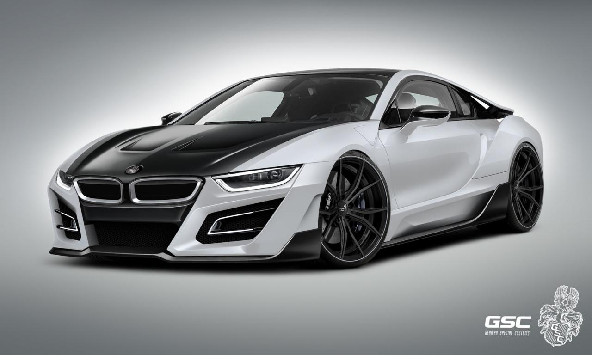
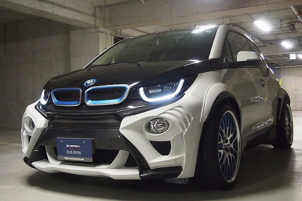
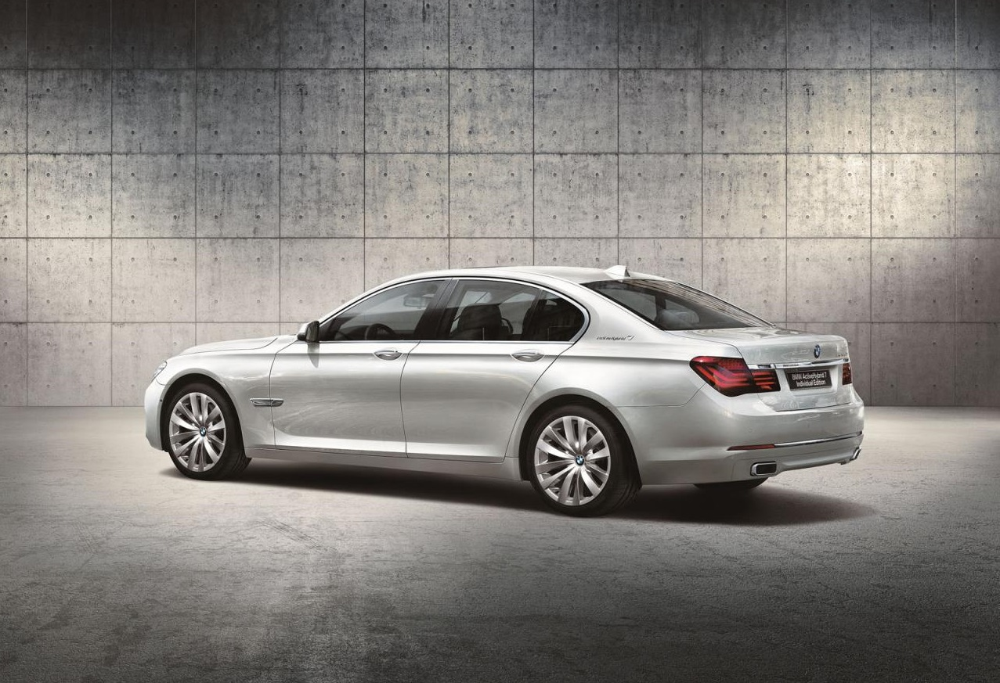

BMW i8 получи по-агресивна визия
Само няколко дни, след като видяхме първата доработена версия на BMW i3, в интернет пространството се появиха снимки на тунингован вариант на по-мощната и скъпа електрическа кола от новата екологична марка на BMW.
Става дума за изцяло визуална доработка за BMW i8, носеща името iTRON. Тя е дело на германската компания German Special Customs.
Подобно на преработеното BMW i3, германският i8 iTRON разполага с агресивен бодикит, който може да бъде поръчан в няколко различни комбинации от цветове.
Предлаганите допълнителни компоненти са нова предна броня с по-големи отвори за въздух и вградени LED светлини, преден спойлер, странични прагове и преработена задна броня, в която са поместени две масивни изпускателни тръби. Нови са също така джантите, чийто размер е 20 инча.
Промени по задвижващата система на колата не са правни. Автомобилът разчита на стандартния си хибриден агрегат. Той съчетава бензинов и електрически двигатели, а батериите му могат да бъдат заредени и в електрическата мрежа.
Бензиновият двигател е TwinPower Turbo с три цилиндъра и обем 1.5 литра, като доставя 231 к.с. и 320 Нм. Той отговаря за задвижването на задните колела и работи с 6-степенна автоматична трансмисия. На предния мост пък е поставен електромотор, доставящ 131 к.с., който е куплиран с 2-степенна автоматична скоростна кутия. Той черпи енергия от литиево-йонна батерия с капацитет 5 кВч.
Общата мощност на хибридната система, която доставя задвижване към четирите колела, е 362 к.с. и 570 Нм. Ускорението от място до 100 км/час отнема 4.4 секунди, като в същото време средното потребление на гориво е само 2.5 л./100 км.
От German Special Customs не съобщават нищо за цените на пакета.

BMW EVO i3 идва от Япония
Японската тунинг компания Eve Ryn разкри своя доработка за електрическата кола BMW i3. Моделът носи името BMW EVO i3 и се отличава с изцяло визуални промени.
Доработката, която вероятно е първата за модела, предлага цялостен бодикит. Той се състои от масивна предна броня с големи отвори за въздух, странични прагове, задна броня с вграден дифузьор и разширени арки на калниците. Виждат се също така допълнителни елементи от карбон, както и 20-инчови джанти в два цвята.
Салонът също е преработен, но към момента липсват снимки или информация. Не се съобщава нищо и за промени в задвижващата система на колата.
Серийното BMW i3 се предлага в два варианта - напълно електрически и такъв, оборудван с ДВГ. И при двата модела мощността е 170 к.с., а въртящият момент - 250 Нм. С едно зареждане максималният пробег на i3 е между 130 и 160 км. При версията i3 REX, разполагаща с допълнителен 650-кубиков бензинов двигател с два цилиндъра, автономията се увеличава до над 300 км.
За зареждането на батериите са необходими около 6 часа, като има вариант и за бързо зареждане до 80%, което отнема по-малко от 30 мин.
Платформата на екологичната кола е изградена от алуминий, а пътническата клетка e от карбонов композит.

BMW ActiveHybrid 7 Individual Edition за Япония
Специална версия на своя флагмански хибрид ще предложи BMW на пазара в Япония. Моделът е ограничен до 20 бройки и се отличава с уникални елементи в екстериора и интериора.
BMW ActiveHybrid 7 Individual Edition, както е пълното име на автомобила, ще се предлага с избор от два специални цвята - бял (Mineral White) и черен (Citrine Black). Промените в екстериора включват още 20-инчови джанти и емблеми "BMW Individual".
Намесата на специалистите от BMW Individual в интериора на колата е по-сериозна. Там виждаме кожена тапицерия Merino, таван от алкантара, както и волан, който е изработен от кожа и дърво. Предлаганите комбинации включват пепеляво-бяло тапицерия и тъмни декоративни елементи или кафява тапицерия, съчетана с елементи от орехово дърво.
Агрегатът на японската ActiveHybrid 7 Individual Edition съчетава 3.0-литров TwinPower Turbo двигател с шест цилиндъра, електромотор и литиево-йонни батерии. Общата мощност е 354 к.с., а въртящият момент достига 500 Нм. Благодарение на това луксозният седан спринтира от място до 100 км/час за 5,7 сек., като има среден разход на гориво от едва 6,8 л/100 км.
Моделът ще бъде произведен в серия от само 20 екземпляра. Всички те са предназначени изключително за Япония. Цените започват от 13 100 000 йени, което приблизително 95 450 евро.